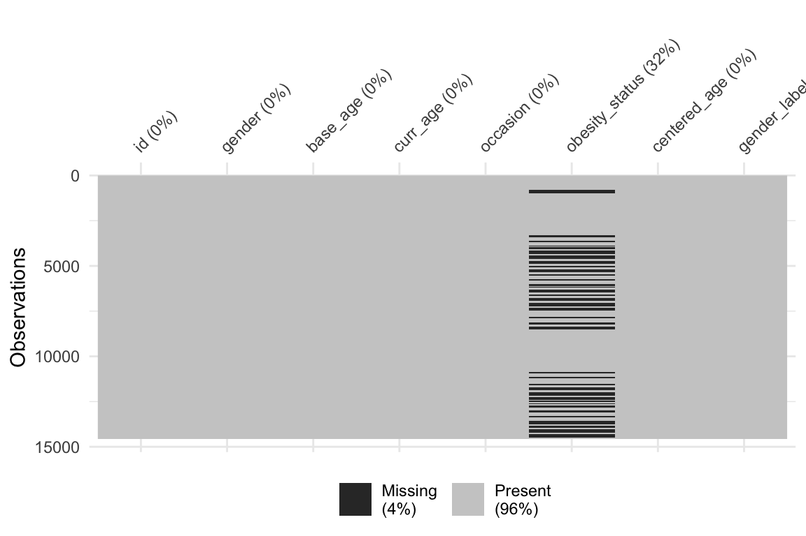
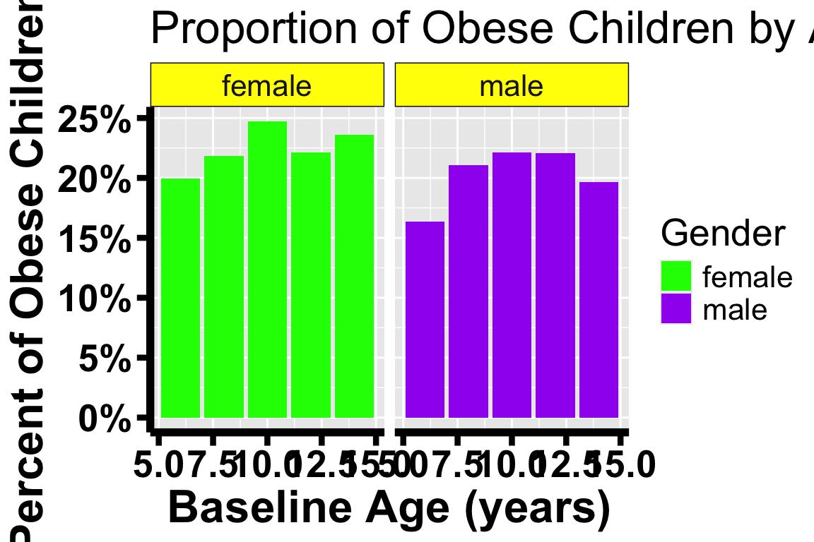
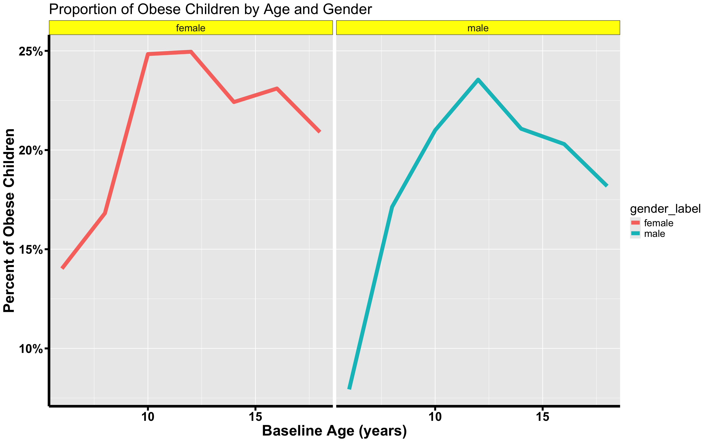
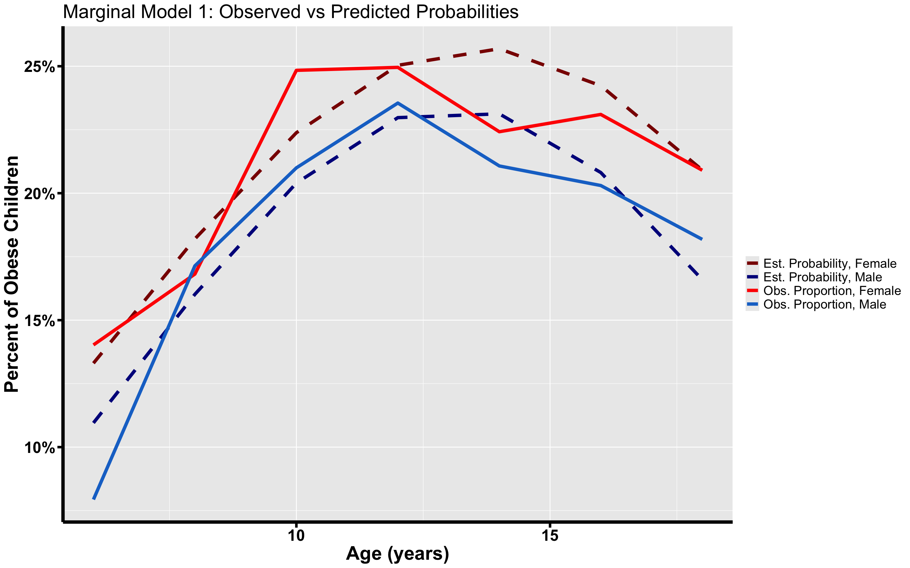
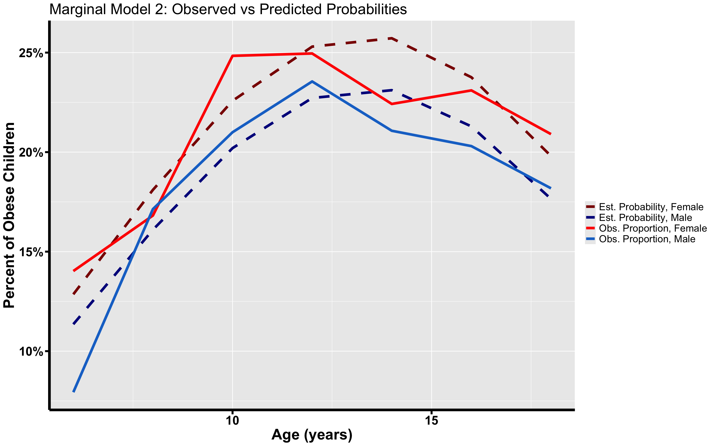
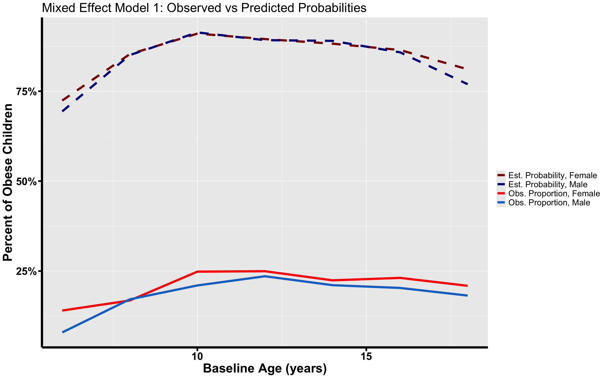
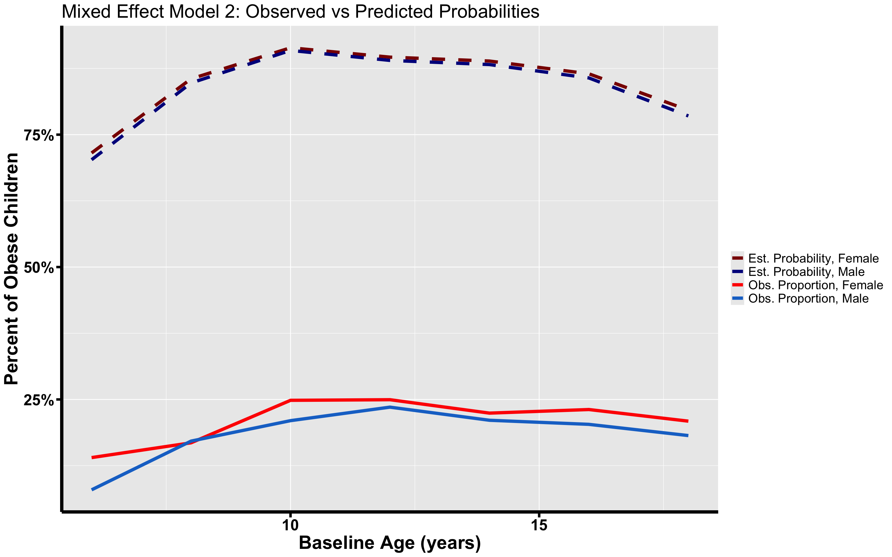

library(tidyr) # To manipulate the data structure
library(data.table) # To manipulate the data structure
library(ggplot2) # To create plots
library(dplyr) #for dataset manipulations with the %>% operator
library(scales) #for making percentages appear on y axis in ggplot
library(naniar) #for missing data visualizations
# packages for models
library(lme4) # for mixed effects models
library(geepack) # install.packages('geepack'), used for the geeglm() function10 Models for Non-Continuous Outcomes
Learning Objectives
- Understand how to conduct fit models with non-continuous outcomes
- Understand how to interpret results
10.1 Background
The purpose of this lab is to learn how to use R software to fit regression models for longitudinal data when the outcome is non-continuous. We will discuss Marginal and Mixed-Effects models.
There are two main types of non-continuous outcomes. The first outcome, which will be the focus of this lab, are binary outcomes where the response variable \(Y \in \{0,1\}\). For examples consider the scenarios: Predict whether or not a person will have diabetes or not, predict whether or not a person is positive for COVID-19 or not.
The response variable is dichotomous coded with 0’s and 1’s, where observations labeled as 1’s represent the occurrence of an event or outcome of interest. Observations labeled with 0 are labeled as belonging to the negative class, where the event or outcome was not observed.
Here we only have two options which is usually why it’s a popular approach to build probabilistic models \(P(Y=1 \mid X)=g^{-1}(X\beta)\) to model the outcome. g is what we call a link function, and common link functions are the logistic link function \(g(p) = log(\frac{p}{1-p})\), the standard normal cumulative density function \(\Phi(p)\), and the complementary log-log function \(g(p) = log(-log(1-p))\). log refers to the natural log.
For these outcomes, we need to build probabilistic models. Why? Because we cannot use a linear model to estimate the classes. We cannot interpret the output of a linear regression model with these non-continuous outcomes.
Statisticians prefer probabilistic estimation as it gives us a way to quantify an individual’s level of association to a certain occurrence of event. Probabilities are always bounded between 0 and 1. This boundedness property allows us to know for certain how extreme your estimates are. For instance if your predicted probability is 0.90 then you know there’s an extremely high chance this individual belongs to the positive class. If \(P(Y=1 \mid X)\) is high (e.g. greater than 0.5) then we say it’s more likely that they’re in the positive class than in the negative class. As an aside, but not relevant to the lab, this can also be extended to categorical outcomes where instead of two outcomes there are K outcomes, where \(K \ge 2\) (i.e. multinomial logistic regression). We will not discuss this further.
Another type of non-continuous outcome variable takes on discrete values (i.e. integer values like 0,1,2,3,). This is defined as “count data” which represents the number of occurrences of an event within a fixed period. Examples include the number of accidents on a freeway over a year or number of cancer cases in a month. Usually models with count responses are estimated using, though not limited to, Poisson and Negative Binomial distributions.
The main rules that we learnt in previous labs for continuous outcomes also apply for non-continuous outcomes. For instance Marginal models for non-continuous outcomes are also population level while Mixed Effect models for non-continuous outcomes are individual (or subject-specific) level.
Analogous overall model-selection procedures also remain the same. For instance when doing Maximum Likelihood Estimation we can still use the Akaike Information Criterion (AIC) and the Bayesian Information Criterion (BIC) to select our final model. For reference \(AIC = 2p - 2log(L)\) where \(L\) is the likelihood and p is the number of covariates (excluding the intercept). Similarly \(BIC = plog(n) - 2log(L)\) where n is the sample size of the data.
While model comparisons remain the same we need to be careful when intepreting the coefficients that we derive from such models. There is a non-linear relationship being imposed now and we need to adjust our understanding accordlingly. Of course though the above sentence needs some explanation for one to truly grasp what the difference is. In a linear regression \(y = X^T\beta\) so we’d interpret the \(\beta\) in relation to the response. In logistic regression, \(logit(p) = log(\frac{p}{1-p}) = X^T\beta\) this \(\beta\) represents how a covariate affects the log-odds. An easier way to interpret \(\beta\) in terms of \(e^\beta\) which then tells us how it affects the odds ratio \(\frac{p}{1-p}\).
10.2 Introduction
In this lab, we will use data from the “Muscatine Coronary Risk Factor Study” (“muscatine.csv” or “muscatine.dta”). The goal of the study was to examine the development and persistence of risk factors for coronary disease in children. Below we describe our data.
The outcome of interest: Obesity status (binary response, “obesity_status”).
The data is longitudinal with each subject having at most three measurements. Measurements were taken biannually (every two years) from 1977 to 1981 (i.e. 1977, 1979, 1981). You’ll notice the dataset is already in long format. This is captured in the occasion variable (“1” = 1977, “2” = 1979, “3” = 1981).
Covariates of interest: Current age (“curr_age”), baseline age (“base_age”) and gender (“gender”). There is also an id variable (“id”) specific to each participant within the study.
Main Objective: Determine whether the risk of obesity increases with age, and whether the patterns of change in obesity are the same for boys and girls.
- We will use the following packages for models:
- lme4: This package is for fitting mixed-effects models. We will use the lmer() function to fit a linear model.
- geepack: This is the “Generalized Estimating Equation Package” package
10.3 Loading the Data into RStudio
## SLOWEST METHOD: This is in base R (i.e. you odn't need to load any packages)
muscatine <- read.csv("Data/muscatine.csv")
# head function allows us to see a sneak preview of the data.
head(muscatine, n = 10) id gender base_age curr_age occasion obesity_status
1 1 0 6 6 1 1
2 1 0 6 8 2 1
3 1 0 6 10 3 1
4 2 0 6 6 1 1
5 2 0 6 8 2 1
6 2 0 6 10 3 1
7 3 0 6 6 1 1
8 3 0 6 8 2 1
9 3 0 6 10 3 1
10 4 0 6 6 1 1Below we standardize the current age variable by centering by the mean. We also create a label for the gender variable.
# Here we turn muscatine into a data table for easier manipulations
muscatine <- data.table(muscatine)
# Center the variable age (curr_age) around the mean
muscatine[, centered_age := curr_age - mean(curr_age)]
# create labels for gender variable
muscatine[, gender_label := ifelse(gender == 0, "male", "female")]
head(muscatine, n = 10) id gender base_age curr_age occasion obesity_status centered_age
<int> <int> <int> <int> <int> <int> <num>
1: 1 0 6 6 1 1 -5.976524
2: 1 0 6 8 2 1 -3.976524
3: 1 0 6 10 3 1 -1.976524
4: 2 0 6 6 1 1 -5.976524
5: 2 0 6 8 2 1 -3.976524
6: 2 0 6 10 3 1 -1.976524
7: 3 0 6 6 1 1 -5.976524
8: 3 0 6 8 2 1 -3.976524
9: 3 0 6 10 3 1 -1.976524
10: 4 0 6 6 1 1 -5.976524
gender_label
<char>
1: male
2: male
3: male
4: male
5: male
6: male
7: male
8: male
9: male
10: male10.4 Exploratory Data Analysis
Before heading to the model fitting, we first would like to perform some data exploration to have a better understanding. Firstly we will begin with a missing data visualization using the naniar package. The naniar package contains a function called vis_miss which allows us to see which covariates are missing data and by how much. Be sure to install the naniar package first.
vis_miss(muscatine)
From the above plot we can see that our only missingness is due to the outcome, obesity status.
muscatine[, numbered_visit := seq_len(.N), by = id]
descript <- muscatine %>%
group_by(numbered_visit) %>%
summarise(ids = length(id), Males = sum(gender_label == "male"), Females = sum(gender_label ==
"female"), mean_age = round(mean(curr_age, na.rm = T), 3), sd = round(sd(curr_age,
na.rm = T), 3), var = round(var(curr_age, na.rm = T), 3))
descript# A tibble: 3 × 7
numbered_visit ids Males Females mean_age sd var
<int> <int> <int> <int> <dbl> <dbl> <dbl>
1 1 4856 2486 2370 9.98 2.79 7.80
2 2 4856 2486 2370 12.0 2.79 7.80
3 3 4856 2486 2370 14.0 2.79 7.80Now we will make barplots to summarize/visualize the proportion of children who are classified as obese within each age within each gender. To start we need to derive this proportion variable. ggplot unfortunately does not have a built in way to specify this so we need to create a new data frame which can take care of this for us. To do so we wil be using the dplyr function.
# by subject, summarize the proportion of these T/F combinations
obesity_prop_by_age <- muscatine %>%
# create a unique identifier for each combination (e.g. 'TRUE-TRUE-FALSE')
group_by(base_age, gender_label) %>%
# prop of times each combo type occurs for a given subject:
reframe(prop = mean(obesity_status, na.rm = T), times = n())Now that we have the proportions for each age group we create a new variable.
bars <- ggplot(obesity_prop_by_age,
aes(x = base_age,y = prop, fill = gender_label)) +
geom_bar(stat = "identity") +
facet_wrap(.~gender_label) + #this is what allows us to make separate boxes for the groups
theme(axis.line = element_line(colour = "black", linewidth = 2),
text = element_text(size = 20),
axis.text = element_text(colour = "black", size = 20, face = "bold"),
axis.title = element_text(size = 24, face = "bold"),
axis.ticks.length = unit(.25, "cm"),
axis.ticks = element_line(colour = "black", linewidth = 1.5),
strip.background=element_rect(colour = "black", fill = "yellow")) +
ggtitle("Proportion of Obese Children by Age and Gender") +
scale_fill_manual(name = "Gender", values = c("green","purple")) +
scale_y_continuous(labels = percent) +
ylab("Percent of Obese Children") +
xlab("Baseline Age (years)")
bars
# by subject, summarize the proportion of these T/F combinations
obesity_prop_by_curr_age <- muscatine %>%
# create a unique identifier for each combination (e.g. 'TRUE-TRUE-FALSE')
group_by(curr_age, gender_label) %>%
# prop of times each combo type occurs for a given subject:
reframe(prop = mean(obesity_status, na.rm = T), times = n())Now that we have the proportions for each age group we create a new variable.
lines <- ggplot(obesity_prop_by_curr_age,
aes(x = curr_age,y = prop,color = gender_label)) +
geom_line(linewidth = 3) +
facet_wrap(.~gender_label) + #this is what allows us to make separate boxes for the groups
theme(axis.line = element_line(colour = "black", linewidth = 2),
text = element_text(size = 20),
axis.text = element_text(colour = "black", size = 20,face = "bold"),
axis.title = element_text(size = 24, face = "bold"),
axis.ticks.length = unit(.25, "cm"),
axis.ticks = element_line(colour = "black", linewidth = 1.5),
strip.background=element_rect(colour = "black", fill = "yellow")) +
scale_fill_manual(name = "Gender",values = c("Female" = "green","Male" = "purple")) +
scale_y_continuous(labels = percent) +
ggtitle("Proportion of Obese Children by Age and Gender") +
ylab("Percent of Obese Children") +
xlab("Baseline Age (years)")
lines
10.5 Marginal Models
Model 1: This model includes gender, age, age\(^2\), and an interaction term.
Model 1: \(E(y_{ij} \mid X) = beta_{0} + \beta_{age}age + \beta_{age^2}age^2 + \beta_{gender}gender + \beta_{gender:age}gender*age + \beta_{gender:age^2}gender*age^2\).
model_1 <- geeglm(obesity_status ~ 1 + gender + centered_age + I(centered_age^2) +
centered_age:gender + I(centered_age^2):gender, id = id, data = muscatine, family = binomial(link = "logit"),
corstr = "unstructured")
summary(model_1)
Call:
geeglm(formula = obesity_status ~ 1 + gender + centered_age +
I(centered_age^2) + centered_age:gender + I(centered_age^2):gender,
family = binomial(link = "logit"), data = muscatine, id = id,
corstr = "unstructured")
Coefficients:
Estimate Std.err Wald Pr(>|W|)
(Intercept) -1.210629 0.050581 572.862 < 2e-16 ***
gender 0.112872 0.071127 2.518 0.11253
centered_age 0.040922 0.013348 9.398 0.00217 **
I(centered_age^2) -0.017927 0.003388 28.002 1.21e-07 ***
gender:centered_age 0.005087 0.018349 0.077 0.78161
gender:I(centered_age^2) 0.003883 0.004642 0.700 0.40295
---
Signif. codes: 0 '***' 0.001 '**' 0.01 '*' 0.05 '.' 0.1 ' ' 1
Correlation structure = unstructured
Estimated Scale Parameters:
Estimate Std.err
(Intercept) 0.9925 0.02745
Link = identity
Estimated Correlation Parameters:
Estimate Std.err
alpha.1:2 0.5792 0.02042
alpha.1:3 0.4624 0.03192
alpha.2:3 0.5589 0.03207
Number of clusters: 4856 Maximum cluster size: 3 Model 2: This model includes gender, age, age\(^2\), and no interaction term.
Model 2: \(E(y_{ij} \mid X) = beta_{0} + \beta_{age}age + \beta_{age^2}age^2 + \beta_{gender}gender\).
model_2 <- geeglm(obesity_status ~ gender + centered_age + I(centered_age^2), id = id,
data = muscatine, family = binomial(link = "logit"), corstr = "unstructured")
summary(model_2)
Call:
geeglm(formula = obesity_status ~ gender + centered_age + I(centered_age^2),
family = binomial(link = "logit"), data = muscatine, id = id,
corstr = "unstructured")
Coefficients:
Estimate Std.err Wald Pr(>|W|)
(Intercept) -1.22520 0.04772 659.3 < 2e-16 ***
gender 0.14152 0.06270 5.1 0.024 *
centered_age 0.04368 0.00915 22.8 1.8e-06 ***
I(centered_age^2) -0.01593 0.00231 47.4 5.8e-12 ***
---
Signif. codes: 0 '***' 0.001 '**' 0.01 '*' 0.05 '.' 0.1 ' ' 1
Correlation structure = unstructured
Estimated Scale Parameters:
Estimate Std.err
(Intercept) 0.992 0.0274
Link = identity
Estimated Correlation Parameters:
Estimate Std.err
alpha.1:2 0.580 0.0204
alpha.1:3 0.462 0.0319
alpha.2:3 0.558 0.0320
Number of clusters: 4856 Maximum cluster size: 3 Now that we have our two models what do we do with them? As mentioned before the purpose is to predict probabilities so let’s do just that. This can be done through the predict() function. To return predicted probabilities specify type as “response”. To get back the linear predictions (i.e. the natural log of the odds ratio \(\frac{P(Y=1| \mid X)}{1-P(Y=1 \mid X)}\) in this case) specify type as “link” (i.e. for link function). A third option is to specify type as “terms”. This gives you back an \(N \times (p-1)\) matrix where each column corresponds to the product of the estimated coefficient \(\beta_j\) and the corresponding covariate \(X_j\). This is not done for the intercept so that must be done manually.
# calculate predicted probabilities for model 1
model_1_probs <- predict(model_1, type = "response")
# calculate predicted probabilities for model 2
model_2_probs <- predict(model_2, type = "response")Now that we have these two probability vectors what do we do with them? We can see how these probabilities vary with respect to age and gender.
We can create plots. We will take the predicted probabilities and plot them against the observed. To do so we begin by taking the mean predicted probability within each Age/Gender strata. To make that clearer, for example we look at the predicted probabilities for all 14 year old males and find their mean.
Note: Uncomment this after you defined model_2_probs
#create new dataset that removes missing values
muscatine_complete <- na.omit(muscatine)
# add in probabilities as covariates
muscatine_complete[,model_1 := model_1_probs]
muscatine_complete[,model_2 := model_2_probs]
# by subject, summarize the proportion of these T/F combinations
gee_probs <- data.table(muscatine_complete %>%
# create a unique identifier for each combination (e.g. "TRUE-TRUE-FALSE")
group_by(curr_age, gender_label) %>%
# prop of times each combo type occurs for a given subject:
reframe(prop = mean(obesity_status, na.rm = T),
prob_1 = mean(model_1),
prob_2 = mean(model_2)))
df_models <- data.frame("Age" = unique(gee_probs[, curr_age]),
"Est_Female1" = gee_probs[gender_label == "female", prob_1],
"Est_Male1" = gee_probs[gender_label == "male", prob_1],
"Est_Female2" = gee_probs[gender_label == "female", prob_2],
"Est_Male2" = gee_probs[gender_label == "male", prob_2],
"Obs_Female" = gee_probs[gender_label == "female", prop],
"Obs_Male" = gee_probs[gender_label == "male", prop])labels <- c("Est. Probability, Female", "Est. Probability, Male", "Obs. Proportion, Female",
"Obs. Proportion, Male")
df <- data.frame(x = rep(df_models[, "Age"], times = 4), y = c(df_models[, "Est_Female1"],
df_models[, "Est_Male1"], df_models[, "Obs_Female"], df_models[, "Obs_Male"]),
group = rep(labels, each = 7))
df %>%
ggplot() + geom_line(aes(x, y, color = group, linetype = group), linewidth = 2) +
theme(axis.line = element_line(colour = "black", linewidth = 2), text = element_text(size = 20),
axis.text = element_text(colour = "black", size = 20, face = "bold"), axis.title = element_text(size = 24,
face = "bold"), axis.ticks.length = unit(0.25, "cm"), axis.ticks = element_line(colour = "black",
linewidth = 1.5)) + scale_color_manual(name = "", labels = labels, values = c("darkred",
"darkblue", "red", "dodgerblue3")) + scale_linetype_manual(name = "", labels = labels,
values = c("dashed", "dashed", "solid", "solid")) + scale_y_continuous(labels = percent) +
ggtitle("Marginal Model 1: Observed vs Predicted Probabilities") + ylab("Percent of Obese Children") +
xlab("Age (years)")
df <- data.frame(x = rep(df_models[, "Age"], times = 4), y = c(df_models[, "Est_Female2"],
df_models[, "Est_Male2"], df_models[, "Obs_Female"], df_models[, "Obs_Male"]),
group = rep(labels, each = 7))
df %>%
ggplot() + geom_line(aes(x, y, color = group, linetype = group), linewidth = 2) +
theme(axis.line = element_line(colour = "black", linewidth = 2), text = element_text(size = 20),
axis.text = element_text(colour = "black", size = 20, face = "bold"), axis.title = element_text(size = 24,
face = "bold"), axis.ticks.length = unit(0.25, "cm"), axis.ticks = element_line(colour = "black",
linewidth = 1.5)) + scale_color_manual(name = " ", labels = labels, values = c("darkred",
"darkblue", "red", "dodgerblue3")) + scale_linetype_manual(name = " ", labels = labels,
values = c("dashed", "dashed", "solid", "solid")) + scale_y_continuous(labels = percent) +
ggtitle("Marginal Model 2: Observed vs Predicted Probabilities") + ylab("Percent of Obese Children") +
xlab("Age (years)")
10.6 Mixed Effect Models
In this section we will fit Mixed-Effects (subject-specific) Models for longitudinal data, when the outcome of interest is a non-continuous variable.
Recall that a Generalized Mixed Effects Model has the following form: \(g(E[y_{ij} \mid X] )= X_{i}\beta + Z_{i}b_i\). Here \(g(p) = logit(p)\).
Model 3: We fit a mixed-effects model with gender, age, age\(^2\), and an interaction term, and a random intercept.
Model 3: \(logit(E[y_{i} \mid b_i, X_i, \beta])= beta_{0} + \beta_{age}age + \beta_{age^2}age^2 + \beta_{gender}gender + \beta_{gender:age}gender*age + \beta_{gender:age^2}gender*age^2 + b_{0,i}\).
The (1|id) means that we are allowing the intercept, represented by 1, to vary by patient.
model_3 <- glmer(obesity_status ~ 1 + gender + centered_age + I(centered_age^2) +
centered_age:gender + I(centered_age^2):gender + (1 | id), family = binomial(link = "logit"),
data = muscatine, nAGQ = 7)
summary(model_3)Generalized linear mixed model fit by maximum likelihood (Adaptive
Gauss-Hermite Quadrature, nAGQ = 7) [glmerMod]
Family: binomial ( logit )
Formula: obesity_status ~ 1 + gender + centered_age + I(centered_age^2) +
centered_age:gender + I(centered_age^2):gender + (1 | id)
Data: muscatine
AIC BIC logLik deviance df.resid
8729 8780 -4358 8715 9849
Scaled residuals:
Min 1Q Median 3Q Max
-1.546 -0.192 -0.174 -0.115 2.522
Random effects:
Groups Name Variance Std.Dev.
id (Intercept) 9.91 3.15
Number of obs: 9856, groups: id, 4856
Fixed effects:
Estimate Std. Error z value Pr(>|z|)
(Intercept) -2.70752 0.12460 -21.73 < 2e-16 ***
gender 0.25269 0.15136 1.67 0.0950 .
centered_age 0.08330 0.02710 3.07 0.0021 **
I(centered_age^2) -0.03785 0.00688 -5.50 3.7e-08 ***
gender:centered_age 0.01719 0.03795 0.45 0.6506
gender:I(centered_age^2) 0.00807 0.00959 0.84 0.3998
---
Signif. codes: 0 '***' 0.001 '**' 0.01 '*' 0.05 '.' 0.1 ' ' 1
Correlation of Fixed Effects:
(Intr) gender cntrd_ I(_^2) gndr:_
gender -0.635
centered_ag -0.033 -0.008
I(cntrd_^2) -0.349 0.336 -0.041
gndr:cntrd_ -0.024 0.013 -0.705 0.017
gndr:I(_^2) 0.286 -0.486 0.023 -0.708 -0.043One thing you might notice about the glmer() function and its output are integration points and the parameter nAGQ, which specifies said points. When the distribution we’re dealing with isn’t normal and the link function \(g()\) isn’t the identity we can’t derive an analytic solution.
In fact the log likelihood \(\ell(\beta)\) looks like: \(\ell(\beta) = \sum^N_{i=1}log( p(y_j \mid \beta) ) = \sum^N_{i=1}log( \int p(y_j \mid b_j,X_j, \beta)p(b_j \mid \beta) db_j)\)
The integral in the definition does not have a closed-form solution, and numerical approximations are required to obtain the maximum likelihood estimates. So when you see the word Adaptive Gauss-Hermite Quadrature that is simply the method that we use to approximate the integral.
For those who are curious, Gauss-Hermite Quadrature is a method for approximating integrals of the following form: \(\int e^{-x^2} f(x)dx \approx \sum^K_{k=1}w_k f(x_k)\) where we pick k points (i.e. the integration points). The \(x_k\) are the roots of the \(K^{th}\) order Hermite polynomial \(H_K(x)\) where \(H_K(x) = (-1)^K e^{x^2} \frac{d^K}{dx^K}e^{-x^2}\), and \(w_k = \frac{2^{K-1}K!\sqrt{\pi}}{K^2[H_{K-1}(x_k)]^2}\). Adaptive Gauss Qudrature chooses the integration points \(x_k\) through a different method, but the specification of the weights \(w_k\) remains the same.
For \(K=1\) this is just the Laplace Approximation method for integration which glmer() uses automatically. If you want to use Adaptive Gauss Hermite you need to specify nAGQ > 1. I mention this because STATA uses adaptive and non-adaptive Gauss Hermite Quadrature to estimate the integral.
Model 4: We fit a mixed-effects model with gender, age, age\(^2\), with no interaction term, and a random intercept.
Model 4: \(logit(E[y_{i} \mid b_i, X_i, \beta]) = beta_{0} + \beta_{age}age + \beta_{age^2}age^2 + b_{0,i}\).
# name this model 'model_4'
model_4 <- glmer(obesity_status ~ 1 + gender + centered_age + I(centered_age^2) +
(1 | id), data = muscatine, family = binomial(link = "logit"), nAGQ = 7)
summary(model_4)Generalized linear mixed model fit by maximum likelihood (Adaptive
Gauss-Hermite Quadrature, nAGQ = 7) [glmerMod]
Family: binomial ( logit )
Formula: obesity_status ~ 1 + gender + centered_age + I(centered_age^2) +
(1 | id)
Data: muscatine
AIC BIC logLik deviance df.resid
8726 8762 -4358 8716 9851
Scaled residuals:
Min 1Q Median 3Q Max
-1.545 -0.193 -0.170 -0.116 2.602
Random effects:
Groups Name Variance Std.Dev.
id (Intercept) 9.9 3.15
Number of obs: 9856, groups: id, 4856
Fixed effects:
Estimate Std. Error z value Pr(>|z|)
(Intercept) -2.73777 0.11945 -22.92 < 2e-16 ***
gender 0.31539 0.13215 2.39 0.017 *
centered_age 0.09211 0.01921 4.80 1.6e-06 ***
I(centered_age^2) -0.03375 0.00485 -6.96 3.5e-12 ***
---
Signif. codes: 0 '***' 0.001 '**' 0.01 '*' 0.05 '.' 0.1 ' ' 1
Correlation of Fixed Effects:
(Intr) gender cntrd_
gender -0.594
centered_ag -0.072 -0.001
I(cntrd_^2) -0.219 -0.010 -0.068# calculate predicted probabilities for model 3
model_3_probs <- predict(model_3, type = "response")
# calculate predicted probabilities for model 4
model_4_probs <- predict(model_4, type = "response")Note: Uncomment this after you define model_3_probs and model_4_probs
# add in probabilities as covariates
muscatine_complete[, model_3 := model_3_probs]
muscatine_complete[, model_4 := model_4_probs]# by subject, summarize the proportion of these T/F combinations
mem_probs <- data.table( muscatine_complete %>%
# create a unique identifier for each combination (e.g. "TRUE-TRUE-FALSE")
group_by(curr_age, gender_label) %>%
# prop of times each combo type occurs for a given subject:
reframe(prob_3 = max(model_3),
prob_4 = max(model_4)))
df_models2 <- cbind(df_models, data.frame("Est_Female3" = mem_probs[gender_label == "female", prob_3],
"Est_Male3" = mem_probs[gender_label == "male", prob_3],
"Est_Female4" = mem_probs[gender_label == "female", prob_4],
"Est_Male4" = mem_probs[gender_label == "male", prob_4]))
df_models2 <- as.data.frame(df_models2)df <- data.frame(x = rep(df_models[, "Age"], times = 4), y = c(df_models2[, "Est_Female3"],
df_models2[, "Est_Male3"], df_models2[, "Obs_Female"], df_models2[, "Obs_Male"]),
group = rep(labels, each = 7))
df %>%
ggplot() + geom_line(aes(x, y, color = group, linetype = group), linewidth = 2) +
theme(axis.line = element_line(colour = "black", linewidth = 2), text = element_text(size = 20),
axis.text = element_text(colour = "black", size = 20, face = "bold"), axis.title = element_text(size = 24,
face = "bold"), axis.ticks.length = unit(0.25, "cm"), axis.ticks = element_line(colour = "black",
linewidth = 1.5)) + scale_color_manual(name = "", labels = labels, values = c("darkred",
"darkblue", "red", "dodgerblue3")) + scale_linetype_manual(name = "", labels = labels,
values = c("dashed", "dashed", "solid", "solid")) + scale_y_continuous(labels = percent) +
ggtitle("Mixed Effect Model 1: Observed vs Predicted Probabilities") + ylab("Percent of Obese Children") +
xlab("Baseline Age (years)")
df <- data.frame(x = rep(df_models[, "Age"], times = 4), y = c(df_models2[, "Est_Female4"],
df_models2[, "Est_Male4"], df_models2[, "Obs_Female"], df_models2[, "Obs_Male"]),
group = rep(labels, each = 7))
df %>%
ggplot() + geom_line(aes(x, y, color = group, linetype = group), linewidth = 2) +
theme(axis.line = element_line(colour = "black", linewidth = 2), text = element_text(size = 20),
axis.text = element_text(colour = "black", size = 20, face = "bold"), axis.title = element_text(size = 24,
face = "bold"), axis.ticks.length = unit(0.25, "cm"), axis.ticks = element_line(colour = "black",
linewidth = 1.5)) + scale_color_manual(name = " ", labels = labels, values = c("darkred",
"darkblue", "red", "dodgerblue3")) + scale_linetype_manual(name = " ", labels = labels,
values = c("dashed", "dashed", "solid", "solid")) + scale_y_continuous(labels = percent) +
ggtitle("Mixed Effect Model 2: Observed vs Predicted Probabilities") + ylab("Percent of Obese Children") +
xlab("Baseline Age (years)")